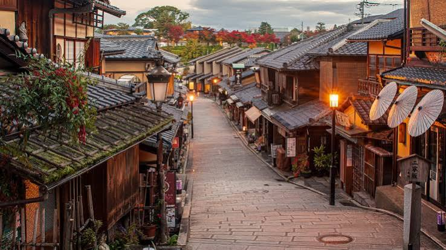

Kyoto, once the capital of Japan, is a city famous for its thousands of classical Buddhist temples, gardens, imperial palaces, Shinto shrines, and traditional wooden houses. It stands beautifully as the cultural heart of the country, offering an immersive look into timeless traditions, stunning autumn foliage, and historical bamboo forests.